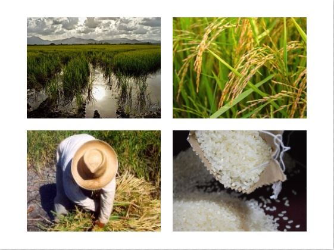

Seaside farmlands
Rice fields
Origen
Rice cultivation began 7,000 years ago in Southeast Asia, then developed in different countries. It was the Arabs who introduced it into the Iberian Peninsula after the conquest, and was subsequently implanted in all continents as a consequence of the large discoveries led by the European conquerors. It is in the mid-nineteenth century that reaches the Marina Alta and introduced its cultivation in the marsh located in Pego, during that time the municipality came to have seven producing mills. The rice paddy lasted until 1970, when it was abandoned for its low economic performance. Then proceeded to the transformation of the terrain promoted by the IRYDA and new crops were introduced. It was in 1995, when the Pego-Oliva Marsh was declared Natural Park, thus initiating a process of conservation and protection of this space, from the rice production. It should be noted that the balance between traditional cultivation and respect for the environment have been responsible for the survival of many species plants and animals of high ecological value.
Where to find it
The marsh of Pego-Oliva, whose municipality concentrates about 5000 flooded rice fields, although it is also shared with the municipality of Denia, to which 2300 hanegadas belong.
Experiences
Flowering period: Between late July and early August, it is during this last month when it goes making the grain. During these two summer months the spectacular landscape is covered with an attractive green mantle full of ears. Period of mowing: During the first half of September the mowing occurs. The straw is separated from the grain and it dries in the sun. The mowing is mechanical.